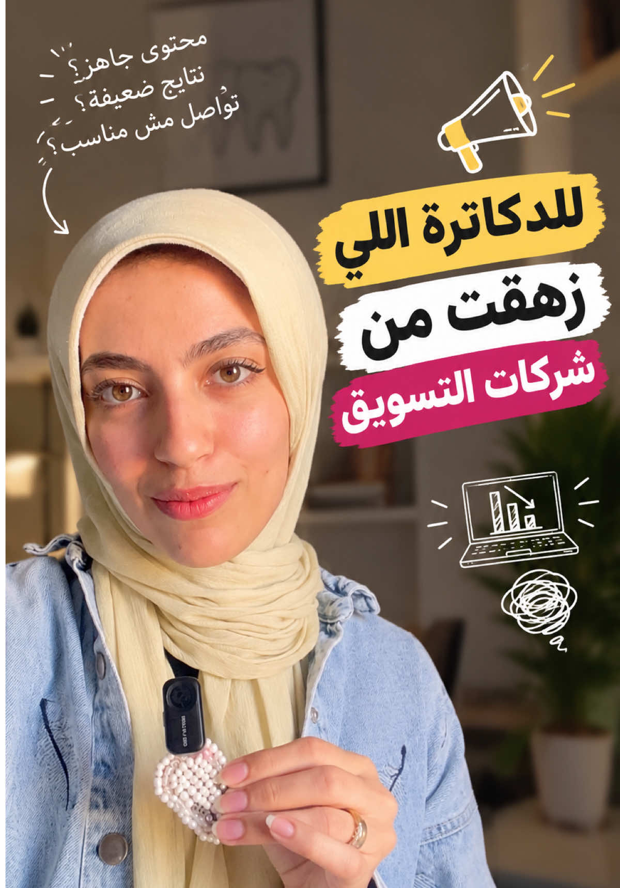

التسويق الطبي لا ينجح إلا إذا قاده من يفهم لغة الطب وعقلية المريض.
كطبيبة ممارسة وميديا باير متخصصة في الإعلانات الطبية الممولة (Meta, TikTok)، أساعد المراكز والعيادات التخصصية في مصر والخليج على جذب الحالات الجادة، تأهيل المرضى، وسد فجوة التحويل عند الاستقبال.
د. آية درغام
هل واجهت هذه المشاكل مع شركات التسويق التقليدية؟
تسويق الخدمات الطبية يحتاج ثقة وأمانة علمية، ولهذا تفشل الحلول التسويقية العامة والتجارية البحتة.
«إعلانات شغالة ومفيش حجوزات فعلية»
تصلك عشرات الرسائل تسأل "بكام الكشف؟" ثم يختفي المريض تماماً. السبب: استهداف عشوائي لصائدي الأسعار بدلاً من استهداف المرضى المهتمين بالقيمة والأمان الطبي.
«المسوق لا يفهم الفرق بين الإجراءات الطبية»
وكالات عامة تخلط بين زراعة الأسنان والتركيبات، أو تعد بنتائج خيالية تخالف معايير وزارة الصحة وتتسبب في حظر الحسابات الإعلانية وتهديد سمعة المركز.
«تسريب المرضى عند مرحلة الاستقبال (Reception Leak)»
مهما كان الإعلان ناجحاً، إن لم يكن فريق الاستقبال مدرباً على الرد في غضون 5 دقائق وتطمين مخاوف المريض بأسلوب محترف، فإن 75% من الميزانية تضيع هباءً.
هل عيادتك تعاني من تسريب المرضى وهدر الميزانية؟
أجب عن 4 أسئلة تشخيصية سريعة لتقييم صحة منظومتك التسويقية واكتشاف سبب عدم امتلاء جدول المواعيد:
العيادة في وضع تشغيلي مستقر نسبياً
اضغط على الخيارات أعلاه لتشخيص دقيق لحالة عيادتك وسد أي تسريب غير مرئي في الحجوزات.
مسار العيادات الذكي (Clinic Flow Blueprint)
الرحلة العلمية المحكمة لتحويل النقرة العابرة إلى مريض جالس على كرسي العيادة، بدون حرق ميزانية أو صائدي تخفيضات.
حاسبة العائد والـ ROAS للعيادات والمراكز
جرّب تقدير حجم التدفق المتوقع والعائد المالي لحملات عيادتك بناءً على التخصص والميزانية الشهرية المرصودة.
أركان نمو المراكز والعيادات الطبية
خطة متكاملة تغطي رحلة المريض بالكامل من لحظة رؤية الإعلان وحتى دخوله غرفة الكشف والمتابعة الدورية.
1. الميديا بايينج الطبي الموجه
إدارة الحملات الممولة على Meta (Facebook & Instagram) و TikTok بدقة متناهية وبناء جمهور مخصص لكل إجراء طبي.
- ✓ استهداف جغرافي دقيق للمرضى في النطاق السكاني للعيادة
- ✓ استهداف شرائح قادرة على تكاليف العمليات والإجراءات الكبرى
- ✓ اختبار مستمر للرسائل الإعلانية وخفض تكلفة المريض المؤكد (CAC)
2. المحتوى الطبي والفيديو (Doctor Branding)
توجيه الطبيب لصناعة فيديوهات تثقيفية تبني الثقة وتهيئ المريض نفسياً دون مبالغة تجارية مبتذلة أو وعود وهمية.
- ✓ سيناريوهات فيديو تجيب عن أسئلة ومخاوف المرضى الشائعة
- ✓ إبراز خبرات وشهادات الطبيب والتقنيات الحديثة المستخدمة بأمانة
- ✓ نصوص تلتزم بالقوانين وأخلاقيات المهنة الطبية وتحمي الحساب من الحظر
3. تدريب الاستقبال وإغلاق الحجوزات
تحويل المحادثات والاستفسارات إلى مواعيد مؤكدة على جدول العيادة، وتقليل نسبة الغياب (No-Show Rate) لأقل من 10%.
- ✓ إعداد ردود نموذجية وسريعة على الواتساب والمكالمات في أقل من 5 دقائق
- ✓ بروتوكول تأكيد المواعيد والتذكير المسبق لضمان الحضور
- ✓ تتبع أداء فريق الاستقبال وربط الإعلانات بالحضور الفعلي للمركز
4. هندسة عروض الحالات الكبرى
تصميم حملات خاصة للإجراءات الطبية والجراحية ذات القيمة العالية لجعل العيادة الوجهة الأولى للحالات الدقيقة.
- ✓ حملات زراعة الأسنان، تقويم الأسنان، والتركيبات المتكاملة
- ✓ حملات جراحات العيون (الليزك والمياه البيضاء) وعلاج المفاصل
- ✓ توضيح خيارات التقسيط وخطط العلاج بطريقة مريحة للمريض
5. لوحة قياس الأرقام والـ ROAS
شفافية كاملة وتقارير دورية تظهر أين صُرف كل قرش وما العائد المالي الفعلي الذي تحقق للعيادة.
- ✓ تتبع تكلفة المريض المحجوز (Cost per Booking) بدقة
- ✓ تقارير أسبوعية وشهرية توضح تفاصيل الحملات ونقاط التحسين
- ✓ حساب القيمة الدائمة للمريض (Patient Lifetime Value - LTV)
6. المنظور الإكلينيكي المباشر
امتلاك د. آية لخلفية طب وجراحة الأسنان يمنح كل حملة عمقاً علمياً وفهماً حقيقياً لمخاوف المريض وتوقعاته.
- ✓ فهم بروتوكولات التعقيم والمعدات ونوعية المواد الطبية المعتمدة
- ✓ التحدث بنفس لغة الأطباء والتفاهم السريع مع مدراء المراكز
- ✓ الثقة الكاملة في مراجعة أي مادة علمية طبية قبل نشرها
دراسات حالة حقيقية لمراكز طبية رائدة
نماذج واقعية من حملات قادتها د. آية درغام في مصر، السعودية، والإمارات وكيف تحولت إلى إيرادات ونمو مستدام.
مركز نخبة الأسنان التخصصي — مضاعفة حالات زراعة الفك الكامل
الحل المنفذ: بناء قمع تصفية إكلينيكي بفيديوهات قصيرة تجيب عن شروط الزراعة وتقنيات التخدير المريح، مع تدريب موظفي الاستقبال على سكريبتات تأكيد الزيارة في أقل من 3 دقائق.
مجمع النور لجراحات العيون — سد فجوة التحويل في موسم الليزك
الحل المنفذ: التركيز على الأمان الطبي ونوع أجهزة الفيمتو ليزك المستخدمة بدلاً من إعلانات التخفيضات الرخيصة، وتفعيل نظام واتساب آلي للتذكير وتجهيز المريض قبل موعد الفحص.
مركز كير للعظام والعمود الفقري — استقطاب مرضى العلاجات التجديدية
الحل المنفذ: حملات فيديو تثقيفية لكبار الاستشاريين تشرح أسباب تآكل الغضاريف دون ادعاءات علاجية مخالفة، وتوجيه المهتمين إلى استشارات فحص دقيقة.
فيديوهات واستراتيجيات عملية لنمو العيادات
دروس وتحليلات حقيقية من حسابات د. آية درغام تشرح أسرار نمو العيادات ومسار تدفق المرضى (Clinic Flow).
 الأكثر مشاهدة (14.6K)
الأكثر مشاهدة (14.6K)
 حلول عملية
حلول عملية
 عقلية المريض
عقلية المريض
 دراسة حالة
دراسة حالة

صوت الطبيب قمع العيادات
قمع العيادات
نخدم فروع المنظومة الطبية التخصصية
خبرة التسويق الطبي تتسع لتشمل جميع أنواع المراكز والعيادات التخصصية الكبرى في مصر والخليج.
مراكز الأسنان
زراعة، تقويم، وتركيباتطب وجراحة العيون
ليزك، مياه بيضاء، وفحوصاتالعظام والمفاصل
مفاصل، عمود فقري، وإصاباتالعلاج الطبيعي والتأهيل
تأهيل حركي وعلاج فيزيائيالباطنة والقلب
قسطرة، ضغط، وفحوصات دوريةالمجمعات ومراكز الأشعة
تشخيص، تحاليل، وفحوصات شاملةلماذا تختار استشارية طبية بدلاً من وكالات الإعلانات التقليدية؟
مقارنة عملية توضح الفارق الجذري بين شريك يفهم كواليس الطب ومخاوف المريض، وبين شركات تسويق عامة تعامل العيادة كمتجر تجاري.
| وجه المقارنة | وكالات التسويق العامة والتقليدية | د. آية درغام (Dentist & Media Buyer) الخيار الموصى به |
|---|---|---|
| 1. الفهم الإكلينيكي للخدمات الطبية | ✕ مسوقون عموميون يجهلون الفرق بين التركيبات والزراعة، ويكتبون نصوصاً عامة محرجة للطبيب تفقد المريض الثقة في أول 3 ثوانٍ. | ✓ طبيبة أسنان ممارسة ومسوقة معتمدة؛ فهم دقيق للبروتوكولات والمصطلحات والأسئلة الحقيقية التي تشغل بال المريض قبل اتخاذ قرار الكشف. |
| 2. الامتثال للوائح الصحة وتراخيص الإعلانات | ✕ وعود غير واقعية ("علاج نهائي، أفضل دكتور") وصور قبل/بعد غير مطابقة تتسبب في غرامات وزارة الصحة وحظر الحساب الإعلاني للعيادة. | ✓ 100% متوافق مع لوائح وزارة الصحة (مصر، السعودية، الإمارات) وسياسات Meta Health الصارمة؛ حملات آمنة تماماً تبني السمعة دون أدنى مخاطرة. |
| 3. معيار النجاح ومحاسبة الأرقام | ✕ يتباهون بتقارير "المشاهدات واللايكات ورسائل الواتساب العشوائية" دون أي اهتمام بعدد المرضى الذين دفعوا وحضروا العيادة بالفعل. | ✓ التركيز على تكلفة استقطاب المريض المؤكد (CPA)، ونسبة حضور المريض للعيادة (Show-Up Rate)، وعائد الاستثمار الفعلي (ROAS). |
| 4. تدريب سكرتارية العيادة وفريق الاستقبال | ✕ يرمون الليدز على الواتساب وتنتهي مسؤوليتهم؛ وتضيع 70% من الميزانية لأن موظف الاستقبال غير مدرب على الرد الطبي ومتابعة المريض المتردد. | ✓ توفير سكربتات طبية مخصصة للاستقبال، وبروتوكول متابعة للمرضى المترددين، وتقليل ظاهرة الغياب (No-Shows) إلى أقل من 15%. |
| 5. هيبة الطبيب وسمعته التخصصية | ✕ ترندات مبتذلة وعروض خصومات رخيصة تحرق هامش الربح وتجذب صائدي التخفيضات، مما يقلل من وقار الطبيب ومكانته الأكاديمية. | ✓ بناء سلطة الطبيب التخصصية (Authority Positioning)، وصناعة محتوى علمي راقٍ يجعل المريض يقصد الطبيب بالاسم ويدفع السعر العادل بثقة تامة. |
باقات النمو المصممة لواقع العيادات الطبية
اختر خطة العمل المناسبة لمرحلة عيادتك الحالية، سواء كنت تبدأ في السوق أو تتوسع وتفتتح فروعاً جديدة.
باقة التدقيق والاستشارة الفردية
- ✓ مراجعة شاملة لحسابات العيادة وحملاتها السابقة على Meta & TikTok
- ✓ تشخيص مواطن تسريب المرضى في مرحلة الاستقبال والواتساب
- ✓ إعداد تقرير مكتوب بخطة العمل التسويقية للـ 90 يوماً القادمة
- ✓ جلسة زووم للإجابة عن جميع استفسارات الطبيب وإدارته
باقة إدارة النمو والميديا بايينج الكاملة
- ✓ إدارة كاملة للحملات الممولة على Meta (FB & IG) و TikTok
- ✓ صياغة وتوجيه تصوير الفيديوهات الطبية الإعلانية أسبوعياً
- ✓ استهداف خاص لحالات الزراعة والتقويم والجراحات الكبرى (High-Ticket)
- ✓ تدريب عملي لفريق الاستقبال (Reception) وسكريبتات رد سريعة
- ✓ تقارير أسبوعية تفصيلية ومتابعة مستمرة لتقليل تكلفة الحجز
باقة إطلاق وتوسّع المراكز الطبية
- ✓ بناء المنظومة التسويقية الكاملة وتدريب الفريق الداخلي للمركز
- ✓ حملات متزامنة لعدة تخصصات طبية في وقت واحد بميزانيات كبرى
- ✓ بناء الحضور الرقمي (Doctor Branding) لكبار أطباء واستشاريي المركز
- ✓ إشراف مباشر واستشارات دورية لتطوير التوسع الإقليمي والفروع
الأسئلة الشائعة لأصحاب العيادات والمراكز
كل ما يشغل بال الأطباء ومدراء العيادات حول التسويق الطبي الرقمي وإدارة الميزانيات.
اطلب تدقيقاً تسويقياً مجانياً لعيادتك (Clinic Audit)
شاركنا تفاصيل عيادتك الحالية والتحدي الذي تواجهه، وسنتواصل معك لتحليل الوضع وتقديم خطة نمو واضحة ومسار تدفق متكامل.